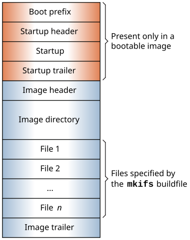

OS images are files that contains the OS, your executables, and any data files that might be related to your programs.
Building an OS image)
Building a flash filesystem image)
Combining multiple image files)
imagecan mean any of the following:
A bootable image is an image that contains the startup code and
procnto and that the Initial Program Loader (IPL), Boot ROM,
or BIOS (x86) can transfer control to. For more information, see The boot process
and Initial Program Loaders (IPLs)
.

A non-bootable image is usually provided for systems where a separate,
configuration-dependent setup may be required. Think of it as a second
filesystem
that has some additional files in it (we'll discuss this in
more depth later). Since it's non-bootable, this image will typically not
contain the OS, startup file, etc.
A QNX OS image includes the OS (procnto), startup code, the libraires required to start up and for the OS to run (libc.so), and any drivers or other code and files needed to access the basic hardware.
Drivers for other devices, and user applications along with the libraries and data files they need, are usually placed in another filesystem, if available.
An OS image is read-only; if you want to use the flash for read/write storage, you
need to import to create a flash filesystem image (.efs file).
For more information, see Building a flash filesystem image
.
For most embedded systems, it is preferable to keep the OS image as small as possible, putting application programs and even drivers that are not needed during the initial startup in another filesystem, such as a NAND or NOR flash filesystem.
# cd /proc/boot
# ls
.script ping cat data1 pidin
ksh ls procnto devc-ser8250-abc123
# cat data1
When we issued the ls command, the OS loaded ls from the image filesystem (pathname /proc/boot/ls).
Then, when we issued the cat command, the OS loaded cat from the image filesystem as well, and opened the file data1.
The OS image can be configured to contain files you need in your embedded system.
For more information, see Building an OS image
below.
If your embedded system has a hard drive or flash memory (e.g., MMC/SD), you can access the data on it by including the appropriate filesystem driver (e.g., devb-eide, devb-mccsd-board_name) in your OS image filesystem and calling the driver from your boot script.
If your system has an on-board flash device, you can use this device to store your OS image and boot the system directly from flash, if your board allows this. (Check the board hardware documentation.)
| Topic | See |
|---|---|
| Building the OS image for a specific board | BSP User's Guide for the board |
| Buildfile syntax | OS Image Buildfiles |
| Customizing product-specific images | The Working with Target Images guide for the product |
| Optimizing your system's boot sequence | The Boot Optimization Guide. |
| Using the various utilities described in this chapter | The QNX OS Utilities Reference |